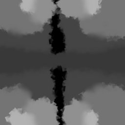
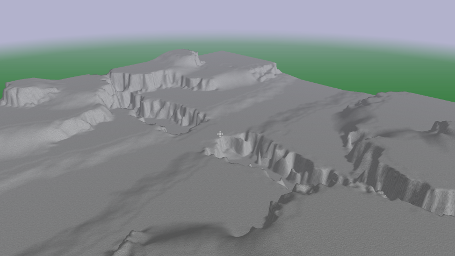
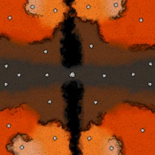
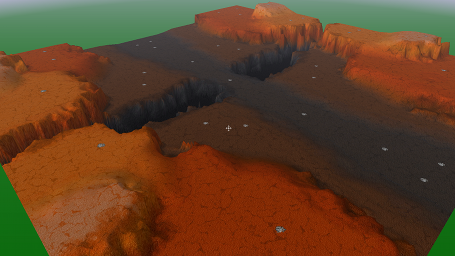
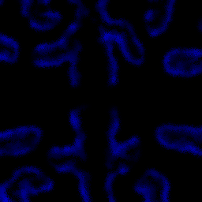
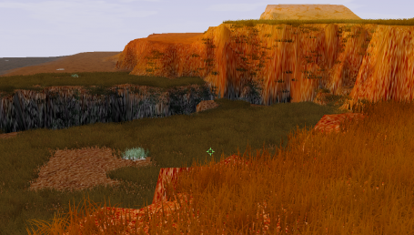
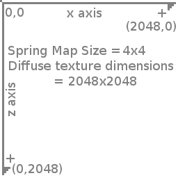

Mapdev:Tutorial Simple
Beginners Tutorial Stage 1
This beginners tutorial is aimed at getting you from nothing, to something simple which you can build upon.
- We'll start with the height map, defining the structure of the terrain
- Then the metalmap, a resource scheme built into the spring engine
- The diffuse texture, defining the colour of the terrain
- The minimap, for when selecting the map in the game lobby
- The grass map, for that extra flourish of detail
- Finally set up the start positions
What you will need
- An image editor, such as GIMP or Adobe Photoshop, etc
- 7zip
- Windows - MapConv, Linux - MapConvNG
- a copy of the map blueprint archive
There are a multitude of other tools you can use to make maps, however for the purposes of this beginners tutorial, these are the only ones you will need. Check the tools section for more information.
Download
Preparation
- Extract the mapcontainer.sdd folder from the blueprint archive into your working directory. Your directory structure should look like this:
- Rename the mapcontainer.sdd folder to the name of your map, eg. mymap.sdd
- Edit the following variables in the mapinfo.lua file, ignore the rest for now.
- name
- shortname
- description
- author
- version (just put like v1 or something in here)
working directory
|-mapcontainer.sdd/
|-LuaGaia/
|-mapconfig/
|-maphelper/
|-maps/
|-mapinfo.lua
|-mapoptions.lua
Create Height map
For this tutorial we will be creating a 4x4 size map, which is relatively small. Typically maps will be 8x8 (for a 1v1) or larger, but entirely depends on the game you are targeting.
- Check the height page to get our image dimensions. In our case a 4x4 map yields a image resolution of 257x257 pixels
- Create a 257x257 greyscale image using your image editor
- Draw the terrain
- Save the image to your working directory, call it heightmap.png
| Tip | |
|---|---|
| Black represents the lowest elevation on the map, white represents the highest, in between lies all the shades of grey. Hard edges in the image will be cliffs, and smooth gradients will be ramps. |
 |
 |
| Example Height Map | Ingame Result |
|---|
{kind=link}
{kind=link}
Edit mapinfo.lua
- Open the mapinfo.lua file in a text editor
- Change the
minHeightandmaxHeightvariables to10and256respectively
These values control the overall height of the terrain, and will be unique to your map. After loading up the map in game you may want to revisit and tweak these values to get the best result.
The resulting portion of code should appear like this:local mapinfo = { ... smf = { minHeight = 10, maxHeight = 256, ... }, ... }
Create Metal Map
| Caution | |
|---|---|
| There are several games for Spring which use their own resourcing system. If you are creating a map for one of those games, a metal map may not be necessary, however it is always nice if you can make your maps as compatible with other games as possible, but this is a choice left entirely up to you. |
- Check the metal page to get our image dimensions. In our case a 4x4 map yields an image resolution of 128x128 pixels
- Create a 128x128 RGB image using your image editor
- Paint the whole image black
- Paint full red spots 6 or so pixels in diameter on the places where you want metal to appear in game.
- Save the image to your working directory, call it metalmap.png
 |

|
| Example Metal Map | Ingame Result |
|---|
Edit mapinfo.lua
- Open the mapinfo.lua file in a text editor
- Change the
maxMetaland theextractorRadiusvariables to6.0and32.0respectively
These variables control the maximum amount of metal that a metal extractor can extract at full capacity, and the radius that a metal extractor will be able to draw from.
The resulting portion of code will appear thus:local mapinfo = { ... maxMetal = 6.0, extractorRadius = 32.0, ... }
Create Diffuse Texture
- Check the diffuse page to get our image dimensions. In our case a 4x4 map yields an image resolution of 2048x2048 pixels
- Create a 2048x2048 RGB image using your image editor
- Paint your ground colour in such a way that it compliments the height of the terrain, and metal spots.
- Save the image to your working directory, call it diffuse.png
| Tip | |
|---|---|
| It may be useful to use the heightmap.png and metalmap.png images as a starting points, scaling them up to size, and then painting over the top. |
| Caution | |
|---|---|
| The larger the map the greater the file size this texture will be, a 4x4 map at 2048x2048 the diffuse texture image is already at 5.4mb, imagine a 32x32 size map, it would be in the hundreds of megabytes. Working with large textures is difficult, and requires good hardware. |
 |
 |
| Example Diffuse Map | Ingame Result |
|---|
{kind=link}
{kind=link}
Create Mini Map
The mini-map is a thumbnail image of the the whole map displayed in lobbies when selecting maps.
- Load up your diffuse.png image
- Scale the image to exactly 1024x1024 pixels
- Save the image to your working directory, call it mini.png
Create Grass Map
Grass adds additional depth to your map, giving it a little bit extra.
- Check the grass page to get our image dimensions. In our case a 4x4 map yields a image resolution of 64x64 pixels
- Create a 64x64 RGB image using your image editor
- Paint the image fully black to begin with
- Paint varying strengths of blue for where you want the grass to show up.
- Save the image to your working directory, call it grassmap.png
 |
 |
| Grass map | In Game Result |
|---|
{kind=link}
{kind=link}
Define Start Positions
considering the small size of the map we will only define two teams
- Open the mapinfo.lua file in a text editor
- Locate the teams subtable and delete the lines for teams 2 and 3
- Edit the
xandzcoordinate for each team to define their start location
The coordinates for spring relate 1:1 with the pixels in the diffuse map. Starting at the top left of the image at (0,0).xincreases horizontally to the right,zincreases vertically downwards.
The code should look similar to this:local mapinfo = { ... teams = { [0] = {startPos = {x = 256, z = 1024}}, [1] = {startPos = {x = 1792, z = 1024}}, }, ... }
 |
| Coordinates |
|---|
{kind=link}
Review
From the tutorial we have learned how to make the:
- Height map
- Diffuse texture
- Metal map
- Mini map
- Grass map
- Start locations
Your directory structure should look similar to this:
working directory |-mymapname.sdd/ | |-LuaGaia/ | |-mapconfig/ | |-maphelper/ | |-maps/ | |-mapinfo.lua | |-mapoptions.lua |-grassmap.png |-heightmap.png |-metalmap.png |-diffuse.png |-minimap.png
Now we need to get the map loaded into the game
Finalizing
Continue to this page to compile, test and archive your map for distribution.
I want more
Continue to stage two